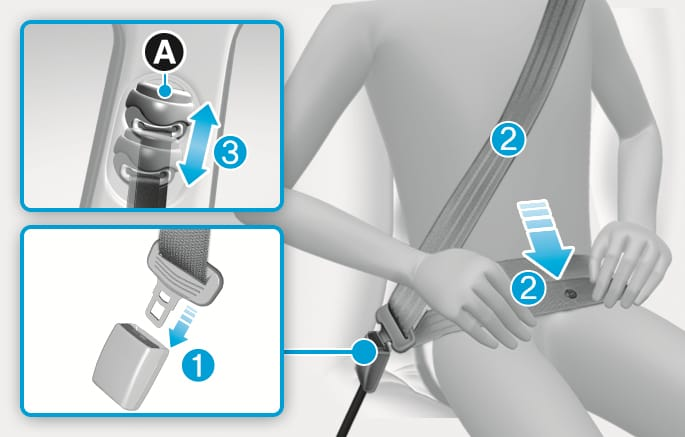
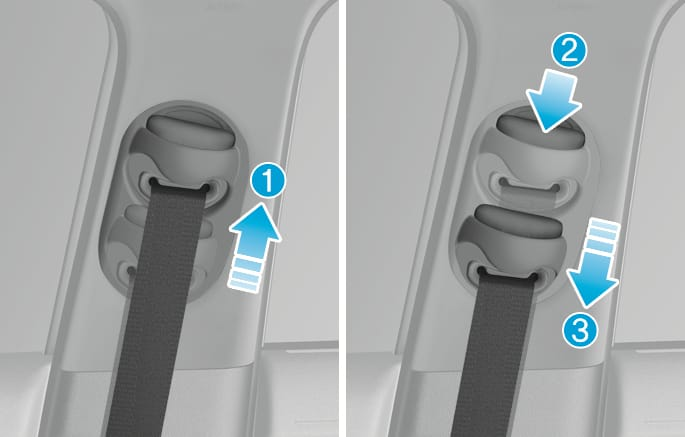
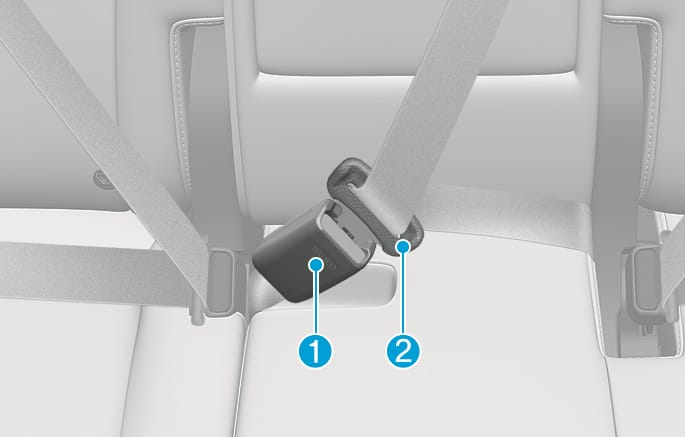
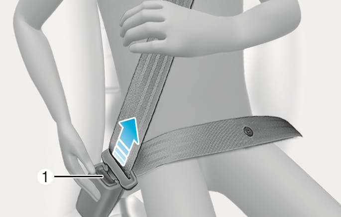

바람직한 안전벨트 착용법
운전자 및 탑승자를 가장 안전하게 보호할 수 있는 바람직한 안전벨트 착용법은 다음과 같습니다.
-
엉덩이를 좌석의 안쪽 끝에 밀착하고 등을 등받이에 기대 앉으십시오.
-
등을 구부리거나 좌석 끝에 걸터앉지 마십시오.

2C_AdjustSeatBelt
-
-
안전벨트 플레이트를 잡고 천천히 당긴 후 버클에 넣고 '찰칵' 소리가 날 때까지 미십시오(1).
-
안전벨트 플레이트와 버클을 결합한 후 플레이트를 세게 당겨 플레이트가 버클에 단단히 고정되었는지 확인하십시오.
-
-
안전벨트를 당겨 어깨띠가 어깨와 가슴을 지나고 골반띠가 골반을 지나도록 조절하십시오(2).
-
안전벨트가 꼬이거나 짓눌리지 않도록 하십시오.
-
-
안전벨트 높이 고정장치를 어깨 높이에 맞춰 조절하십시오(3).
-
위치를 높이려면, 고정장치를 위로 올리십시오.
-
위치를 낮추려면 잠금 버튼(A)을 누르면서 고정장치를 아래로 당기십시오.
-
벨트의 높이 조절하기(앞좌석)

2C_AdjustSeatBeltHeight
벨트의 어깨높이를 조절할 수 있습니다. 몸에 맞게 어깨높이를 조절하십시오.
-
고정 장치의 위치를 높이려면, 고정 장치를 위로 올리십시오(1).
-
고정 장치를 낮추려면 잠금 버튼을 누르면서(2) 고정 장치를 아래로 당겨 내리십시오(3).
안전벨트를 너무 느슨하게 착용하지 않도록 주의하십시오. 안전벨트의 보호 효과가 감소할 수 있습니다.

2C_RearCenterSeatBeltWearStep
-
시트 쿠션에 있는 수납 홈에서 버클(1)을 빼십시오.
-
버클(1)에 'CENTER'가 표기되었는지 확인하고, '찰칵' 소리가 날 때까지 플레이트(2)를 밀어 넣으십시오. 그 후 안전벨트를 손으로 세게 당겨 잘 채워졌는지 확인하십시오.
-
안전벨트를 해제한 후에는 다시 버클을 시트 쿠션에 있는 수납 홈에 넣으십시오.
-
안전벨트가 당겨지지 않는 경우, 벨트를 강하게 당긴 후 놓았다 다시 당기십시오.
-
플레이트가 유리창에 부딪히지 않도록 플레이트를 잡고 천천히 안전벨트가 감기도록 하십시오.

2C_SeatBeltRelease
버클의 해제 버튼을 누른 상태로 안전벨트 플레이트를 당겨 버클로부터 분리하십시오.